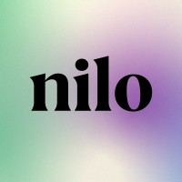
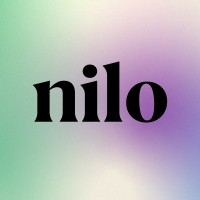

Sobre Jan Vieira
Jan Vieira é mais do que uma profissional, é uma ponte que une pessoas, empresas e resultados por meio da saúde e da comunicação. Seu carisma e paixão pelo que faz deixam marcas positivas por onde passa, inspirando mudanças e transformando vidas.
Com formações em Enfermagem e Letras, Jan construiu uma trajetória única que combina conhecimento técnico e sensibilidade humana. Essa combinação permite que ela traduza conteúdos complexos em mensagens claras, estratégicas e envolventes, impactando diretamente a vida de colaboradores, gestores e empresas.
Durante sua experiência em grandes organizações como Central Nacional Unimed, SulAmérica e Dasa, Jan percebeu a necessidade urgente de conectar a gestão de saúde corporativa à promoção e prevenção efetiva da saúde. Foi a partir dessa visão que ela assumiu a missão de criar soluções que vão além de processos: que geram bem-estar genuíno e resultados sustentáveis.
Reconhecida por sua leveza, energia cativante e competência, Jan possui mais de 15 anos de experiência em mentorias, treinamentos e docência. Ela é especialista em ensinar profissionais e líderes a se comunicarem com confiança e impacto, transformando apresentações em momentos memoráveis.
Além disso, Jan lidera projetos digitais inovadores voltados para saúde, sempre com o propósito de gerar agilidade e eficácia para empresas e serviços.
Seu propósito é simples, mas poderoso: fazer da comunicação uma ferramenta transformadora que conecta saúde, pessoas e resultados. Quem conhece Jan, sabe: ela é a inspiração que sua organização precisa para atingir o próximo nível.
 
